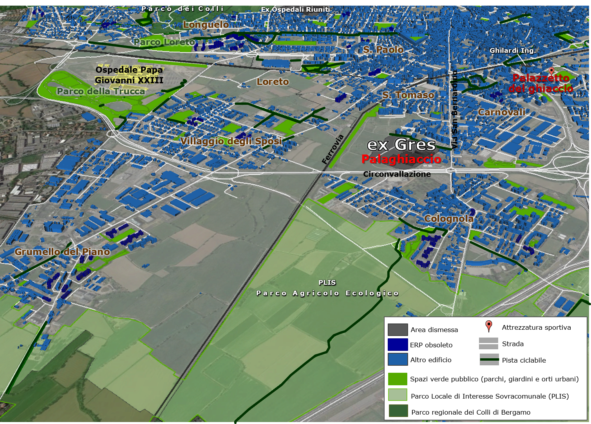

| Contesto attuale: parchi, aree verdi e orti urbani |
|  Il verde nella periferia sud-occidentale di Bergamo, si caratterizza per la presenza di ampi spazi verdi |
| Attualmente l’area della periferia sud occidentale di Bergamo si caratterizza per la presenza di ampi spazi verdi, nello specifico a sud di Colognola si estende il PLIS Parco Agricolo Ecologico Madonna dei Campi, tra Bergamo e Stezzano, su un’area di circa 360 ettari, che testimonia la vocazione agricola dei territori meridionali della città. Il parco agricolo è stato creato tra il 2009 e il 2011 con lo scopo di mantenere l’antico rapporto tra città e campagna (Belotti, 2015). Il PAE non solo si pone come obiettivo la preservazione del verde accanto alle aree cementate, ma vuole diventare un sistema economicamente sostenibile al servizio dei cittadini, potenziando la produzione agricola di qualità a catena corta nelle zone urbanizzate (www.paebg.it). Inoltre, proprio adiacente all’ex-Gres è presente un’area verde quasi completamente abbandonata, in cui sulla base della progettazione prevista dal PGT del 2009, sarebbe dovuto sorgere un parco pubblico. Qui si trovano ancora oggi alcuni terreni utilizzati dagli abitanti come orti urbani. |